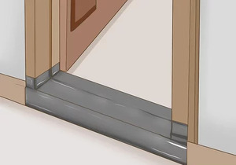
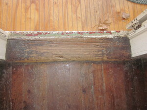

ⲃⲉⲛⲛⲏ B portal v ⲡⲛⲛⲏ.
(noun female)
construction, tool
doorpost, threshold, step [σταθμος, φλια, προθυρον, βαθμος]


complete
41a
266a
266a
ⲡⲛⲛⲏ, ⲡⲛⲏ S, ⲃⲉⲛⲛⲏ B nn f, doorpost, threshold, step: Ex 21 6 B (S ⲟⲩⲉϭⲣⲟ), Deu 15 17 B (var ⲟⲩⲉϫⲣⲟ, S om) σταθμός; 1 Kg 1 9 S, MG 25 252 B φλιά; Jud 19 27 S, Ez 46 2 S ⲡⲏⲛⲏ (B ⲫⲟⲓ), R 2 2 39 S ⲛⲉⲡ. ⲛⲣⲟ πρόθυρον, R 1 4 22 S charms buried below ⲧⲡ. ⲙⲡⲣⲟ limen; Lev 8 35 S (B ⲣⲟ) θύρα; Pro 9 18 B (SA ⲡⲁϣ) πέταυρον; 1 Kg 5 5 S, Si 6 37 S βαθμός; Tri 492 S درجة; Mor 40 20 S ⲧϣⲟⲣⲡⲉ ⲙⲡ. ⲙⲡⲧⲱⲣⲧⲣ = C 43 49 B ϯϧⲁⲏ ⲛⲃ. ⲛⲧⲉ ⲡⲓϧⲁⲉ ⲛⲧⲱⲣⲧⲉⲣ, ShP 1316 57 S foot on ladder ⲣ ⲧⲡⲉ ⲛϣⲟⲙⲧⲉ ⲙⲡ., RChamp 373 S suffer him not to come within ⲡ. of monastery, C 86 350 B entered ϩⲓϯⲃ. of τόπος, C 41 49 B seated ϩⲓⲣⲉⲛⲫⲣⲟ…ⲉϫⲉⲛϯⲃ. But ⲡ. & ⲃ. ? distinct words (Dévaud Études 59 n).
See also:
| view | ⲧⲟⲩⲁ S ⲑⲟⲩⲁⲓ, ⲑⲃⲁⲓ B | (noun male/female) door-post or lintel [φλια, υπερθυρον]1666 |
| view | ⲟⲩⲟ(ⲟ)ϭⲉ, ⲟⲩⲟⲓϭⲉ S ⲟⲩⲁϭⲉ A ⲟⲩⲟϫⲓ B ⲟⲩⲁϫⲓ F | (noun female) (dual ?), jaw, cheek [σιαγων]1772 |
| view | ⲣⲁⲙⲱⲛⲉ, ⲣⲁⲙⲟⲩⲛⲉ, {or ?} ⲣⲁⲙⲱⲛ, ⲣⲁⲙⲟⲩⲛ S | (noun male) part of door, post ?1325 |
| view | ⲕⲟⲩⲣ SA ϭⲟⲣ S | (noun male) pivot, hinge of door [στροφιγξ]838 |
| view | ⲙⲉϣϯⲃⲥ S ⲙⲉϣⲑⲓⲃⲥ B | (noun male) hinge of door [στροφιγξ]1141 |
| view | ⲃⲁ, ⲃⲁⲉ, ⲃⲁⲉⲓ, ⲃⲟⲓ S ⲃⲁⲉ AL ⲃⲁⲓ B ⲃⲉⲓ, ⲃⲉⲉⲓ, ⲃⲁⲉⲓ F | (noun male) f once, branch of date-palm [βαιον, βραβειον]558 |